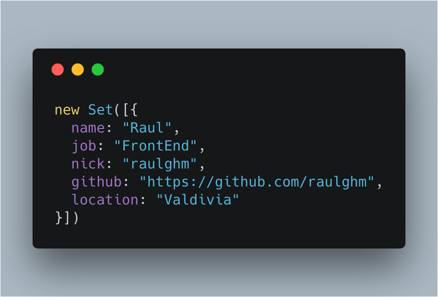

`
<ul>
<li>uno</li>
<li>dos</li>
<li>tres</li>
<li>cuatro</li>
<li>cinco</li>
</ul>
let lis = document.querySelectorAll('li')
lis.length
lis.values
lis.keys
lis.forEach((li, k) => {
console.log(k, li.textContent)
})
for (li of lis) {
li.addEventListener...
}
let lis = Array.prototype.slice.call(lis)
let lis = Array.from(lis) // la magia
let lis = Array.from(lis) // la magia
const find = lis.find(li => li.textContent == 'dos')
const map = lis.map(li => li.textContent + ' JS es feo')
console.log(find)
console.log(map)
...
uniq = (data) => {
return data.filter((elem, pos, arr) => {
return arr.indexOf(elem) == pos
})
}
uniq([1,2,3,3]) // [1,2,3]
[...new Set([1,2,3,3])]
// (3) [1, 2, 3]
const modas = [
{id:0, name:'BEM'},
{id:1, name:'MutableCSS'},
{id:2, name:'Styled Components'},
{id:3, name:'MutableCSS'},
{id:4, name:'BEM'},
]
const filterNormal = (data) => data
.filter((obj, pos, arr) => {
return arr.map(mapObj => mapObj.name).indexOf(obj.name) === pos
})
console.time()
const res = filterNormal(modas)
console.timeEnd()
const filterSet = (data) => [...new Set(data.map(item => {
return JSON.stringify({ name: item.name })
})
)].map(s => JSON.parse(s))
console.time()
const res = filterSet(modas)
console.timeEnd()
filterNormal(modas)
// 25.985107421875ms
filterSet(modas)
// 1.395263671875ms
This repository contains a proposal for adding a "function-like" import() module loading syntactic form to JavaScript. It is currently in stage 3 of the TC39 process.
const page = await import('./pages/about');
// render page
page.render();
babel-polyfill o babel-runtime + babel-plugin-transform-runtime
<!DOCTYPE html>
<nav>
<a href="books.html" data-entry-module="books">Books</a>
<a href="movies.html" data-entry-module="movies">Movies</a>
<a href="video-games.html" data-entry-module="video-games">Video Games</a>
</nav>
<main>Content will load here!</main>
<script>
const main = document.querySelector("main");
for (const link of document.querySelectorAll("nav > a")) {
link.addEventListener("click", e => {
e.preventDefault();
import(`./section-modules/${link.dataset.entryModule}.js`)
.then(module => {
module.loadPageInto(main);
})
.catch(err => {
main.textContent = err.message;
});
});
}
</script>
Es parte del core de parcel https://parceljs.org/code_splitting.html
https://router.vuejs.org/en/advanced/lazy-loading.html https://babeljs.io/docs/plugins/syntax-dynamic-import
const Home = () => import(/* webpackChunkName: "home" */ './Home.vue');
const routes = [
{ path: '/', name: 'home', component: Home },
];
https://raulghm.github.io/cata-variables/test
colors.css
:root {
/* Colors */
--color-white: #fff;
--color-black: #111;
}
Config test (config.json)
{
"lint": true,
"postcss-reporter": {
"plugins": ["stylelint", "postcss-bem-linter"],
"throwError": true
}
}
npm run build-test
<input v-model.lazy="..." />
// Sincroniza el model solo en el evento `change` no con el evento `input`
<input v-model.number="..." />
// Siempre devuelve un numero
<input v-model.trim="..." />
// Remueve los espacio en blanco
<form @submit.prevent="foo()">...
Prevenir que la pagina recarge
<img @mouseover.once="showImage">
Solo gatilla una vez